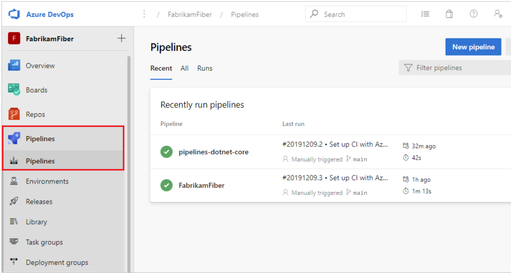
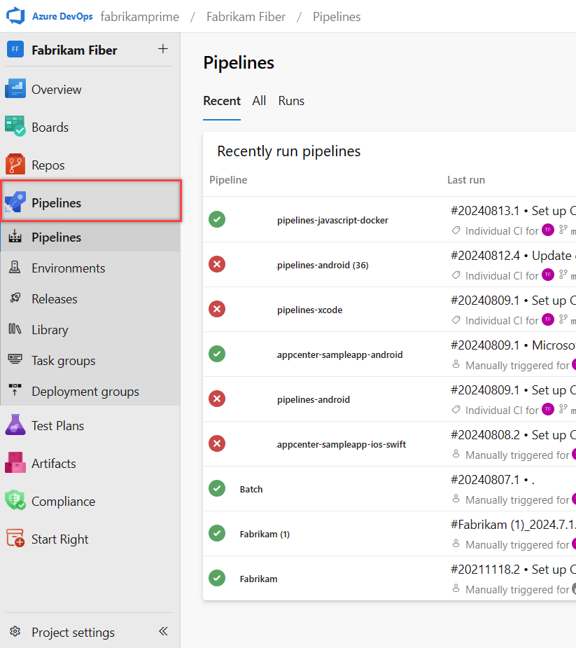

讓 build、測試、部署自動化
Azure Pipelines 是 Azure DevOps 中負責 CI/CD 自動化的服務。所謂 CI/CD,由兩個概念組成:
- 持續整合 (Continuous Integration, CI)——開發者頻繁地將各自的變更整合進共用主線,並透過設定觸發條件 (trigger),讓提交 (push 或 Pull Request) 自動進行 build 與測試。問題在最早期即被發現,避免缺陷累積。CI 同時產出可供後續部署使用的 artifact (如 Docker image)。
- 持續交付 (Continuous Delivery, CD)——將通過驗證的 artifact 自動 build、測試,並部署到一個或多個環境 (測試、預備、生產)。release 流程自動化,降低人工部署的失誤與延遲。
Azure Pipelines 將 CI、持續測試與 CD 整合於同一服務,支援主要語言、專案類型與部署目標,並可跨平台平行執行。唯一前提是原始碼須置於版本控制之下 (Azure Repos 或 GitHub)。

左側選單的 Pipelines 服務展開後分為三個頁面,本課接下來三章即依序展開:Pipelines 列出專案中所有 pipeline 與每次執行的狀態,是定義與觀察流程的起點;Environments 管理部署的目標環境,並可為 production 等關鍵環境設定核准關卡;Library 則保管可跨 pipeline 共用的變數群組與安全檔案。

撰寫並執行一條 pipeline
Azure Pipelines 以一份 azure-pipelines.yml 檔案描述整條流程,與程式碼一同存放於 repo、接受版本控管——誰在何時改了什麼,都能在 commit 歷史中追溯,也能透過 Pull Request 審查。這種「pipeline as code」是官方推薦的做法;本課與後續範例皆以 YAML 撰寫。
核心詞彙:pipeline → stage → job → step
YAML pipeline 的結構由外而內分為四層。先建立這張層級圖,後續閱讀任何 pipeline 定義時都能對應到正確的層級:
四個層級加上幾個常用的關聯概念,整理如下:
| 層級 / 概念 | 定義 |
|---|---|
| pipeline | 整條自動化流程,由一個 YAML 檔定義,內含一個或多個 stage |
| stage | 流程中的主要階段,例如 build、test、deploy。stage 之間可設定依賴順序 |
| job | 一個 stage 內可執行於單一 agent 的工作單位;同一 stage 的多個 job 可平行執行 |
| step / task | job 內最小的執行單位。script 執行任意命令列指令;task 則是預先封裝的可重用動作 (如安裝 Node.js) |
| agent | 實際執行 job 的運算機器 (VM 或容器) |
| trigger | 啟動 pipeline 的條件,例如 push 到某分支或建立 Pull Request |
| artifact | job 產出並可傳遞給後續 stage 或部署使用的成品 (如 build 好的檔案) |
| environment | 部署的目標環境 (如 staging、production),可附加核准與檢查 |
script 與 task 都是 step 的形式。script 直接跑命令列指令,適合簡單操作;task 是封裝好的可重用元件,封裝了較複雜的邏輯與參數 (如版本選擇、相依設定)。
第一條 azure-pipelines.yml
下面是一份完整、可直接理解的 Node.js 專案 pipeline。它在每次 push 到 main 時,於一台乾淨的 Linux 機器上安裝 Node.js、裝相依套件、執行測試並 build 專案:
trigger:
- main
pool:
vmImage: 'ubuntu-latest'
steps:
- task: NodeTool@0
inputs:
versionSpec: '20.x'
displayName: '安裝 Node.js'
- script: npm ci
displayName: '安裝相依套件'
- script: npm test
displayName: '執行測試'
- script: npm run build
displayName: 'build 專案'逐段拆解這份定義:
trigger——指定觸發條件。此處設定為main,表示任何 push 到main分支都會啟動這條 pipeline。pool與vmImage——指定執行環境。ubuntu-latest代表使用 Microsoft 代管的最新 Ubuntu 映像,每次執行都是乾淨的 VM。steps——依序執行的動作清單。第一個是task(NodeTool@0),用封裝好的元件安裝指定版本的 Node.js;其餘三個是script,直接執行命令列指令。displayName——每個 step 在執行記錄中顯示的名稱,讓記錄易於閱讀。
這份範例沒有明確宣告 stage 與 job,因為當 pipeline 只有單一 stage、單一 job 時,可省略外層而直接寫 steps。Azure Pipelines 會自動將其包進一個隱含的 stage 與 job。需要多階段 (例如先 build 再 deploy) 時,才需展開成完整的 stages 結構。
Triggers — 何時觸發
trigger 決定 pipeline 何時自動執行,是設定出來的條件而非固定規則。常見的觸發方式有四種:
| 觸發方式 | 啟動時機 |
|---|---|
| CI trigger | 程式碼 push 到指定分支時 (最常見) |
| PR trigger | 建立或更新針對指定分支的 Pull Request 時,用於合併前驗證 |
| Scheduled | 依排程定時執行 (例如每晚一次的夜間 build) |
| Manual | 不設自動觸發,由人手動於 UI 啟動 |
以下片段示範 CI trigger 與排程 trigger 的寫法。trigger 監聽 push,schedules 則以 cron 語法設定每日定時執行:
# 推送到 main 或 release/* 時觸發 (CI)
trigger:
branches:
include:
- main
- release/*
# 每天 02:00 在 main 上執行一次 (排程)
schedules:
- cron: '0 2 * * *'
displayName: '每日夜間 build'
branches:
include:
- mainAgents — 在哪裡執行
pipeline 的每個 job 都需要一台 agent 來執行。agent 分為兩類:
| 類型 | 說明 | 適用情境 |
|---|---|---|
| Microsoft-hosted | 由 Microsoft 維護,每次執行皆提供乾淨的全新 VM,用完即回收 | 免維護、需求標準的多數專案 |
| Self-hosted | 自行架設於自有機器,可預先安裝特定工具、保留快取與環境 | 需特定軟體、特殊硬體或快取加速時 |
代管 agent 的優點是免維護且環境一致;缺點是每次都從乾淨狀態開始,無法保留前次的快取。自架 agent 則相反——能保留環境與快取以加速 build,但須自行負責安裝、更新與安全維護。範例中的 vmImage: 'ubuntu-latest' 即指定使用代管 agent。
部署到 environment,為 production 設關卡
environment 是部署的邏輯目標——一個具名的資源集合,常見命名如 Dev、Test、Staging、Production。環境底下的資源代表實際的部署對象,目前支援 Kubernetes 與虛擬機器兩種資源類型 (Classic pipeline 不支援 environment,改以 deployment group 達成類似功能)。
相較於直接把成品推上伺服器,透過 environment 部署可換得四項效益:
| 效益 | 說明 |
|---|---|
| 部署歷程 | 記錄每次部署的 pipeline 與執行細節;多條 pipeline 部署到同一環境時,可追溯每次變更的來源 |
| 可追蹤性 | 檢視部署到該環境的 commit 與 work item,追蹤某段程式碼或某個需求是否已抵達該環境 |
| 資源健康 | 驗證應用程式是否處於預期的運作狀態 |
| 安全控管 | 指定哪些使用者與哪些 pipeline 可部署到該環境 |
部署到環境的工作須使用特殊的 deployment job,而非一般 job——它會記錄每次部署的歷程,讓「哪個版本部署到哪個環境」可被追蹤。若 YAML 引用了尚未建立的環境,且操作者身分可辨識,Azure Pipelines 會自動建立該環境。
更重要的是,environment 可附加核准關卡 (approval gate)。對 production 設定核准後,pipeline 執行到部署步驟會暫停,等待指定的人員在 UI 上手動核准,才繼續執行。這道關卡讓自動化流程在最關鍵的一步保留人工把關。
stages:
- stage: deploy
jobs:
- deployment: deployProd
environment: 'production' # 對此環境設定核准後,部署前會暫停等待
strategy:
runOnce:
deploy:
steps:
- script: ./deploy.sh
displayName: '部署到 production'核准本身不在 YAML 中設定,而是在 Azure DevOps 的 Environments 頁面,針對該環境加入「Approvals and checks」。如此一來,YAML 只負責描述「部署到哪個環境」,而誰能核准、需要幾人核准等治理規則,則由環境設定集中管理。
azure-pipelines.yml 與程式碼放在同一 repo 一起版本控管,讓流程定義可審查、可回溯;同時為 production 環境設定核准關卡,在自動化的便利與部署的安全之間取得平衡。自動化負責重複勞動,人工保留最後一道判斷。
變數群組與安全檔案
Library 是專案層級的資產集合,存放可在多條 pipeline 之間共用的設定與檔案,避免把同一份組態或機密重複寫進各個 pipeline、甚至 commit 進 repo。它收納兩類資產:變數群組 (variable groups) 與安全檔案 (secure files)。
變數群組 (Variable Groups)
變數群組把一組變數集中管理,供多條 pipeline 引用;在群組中修改一次,所有連結的 pipeline 自動取得新值。群組內的變數可為一般值,也可標記為機密 (secret)——機密以加密形式儲存,在 UI 上以鎖頭圖示表示。群組亦可連結 Azure Key Vault,將 Key Vault 中的 secret 當作變數帶入,使機密的儲存與輪替集中由 Key Vault 管理。
在 YAML 中以群組名稱引用整個變數群組,之後即可像一般變數一樣以 $(變數名) 取用:
variables:
- group: my-variable-group # 引用 Library 中的變數群組
steps:
- script: echo $(app-name) # 取用群組內的變數安全檔案 (Secure Files)
安全檔案用來存放不應 commit 進 repo 的敏感檔案,並在多條 pipeline 間共用。典型例子包括簽章憑證 (signing certificate)、Apple provisioning profile、Android keystore 與 SSH 金鑰。檔案以加密形式儲存於伺服器,僅能從 pipeline task 取用,且僅限授權的 pipeline 存取;單一檔案上限 10 MB,上傳後內容不可修改 (需更新時刪除後重新上傳)。
取用安全檔案透過 DownloadSecureFile@1 task,下載後以該 task 的 secureFilePath 輸出取得實際路徑:
steps:
- task: DownloadSecureFile@1
name: caCert
inputs:
secureFile: 'myCACertificate.pem'
- script: echo 憑證已下載於 $(caCert.secureFilePath)